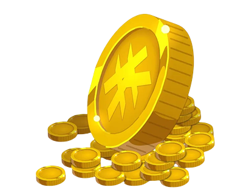
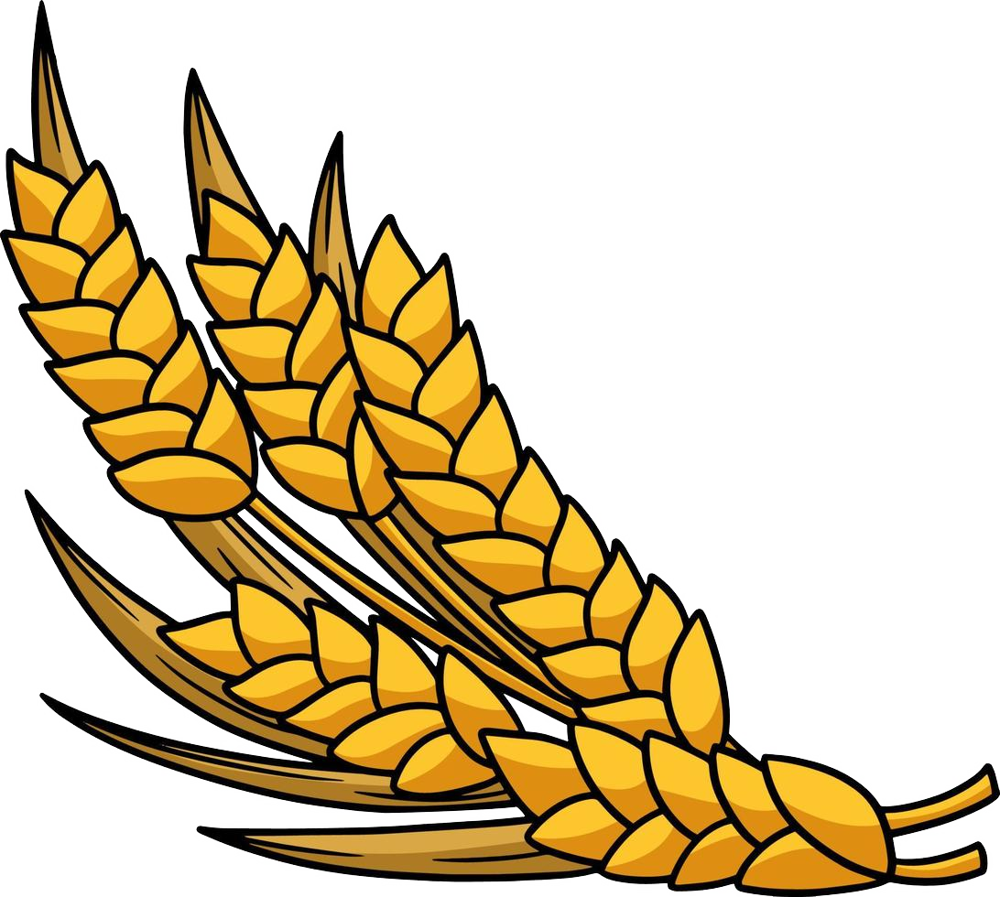

Qu'est ce qu'un Jeux de Conquête ?
Un jeux de conquête est un jeux tour par tour basé sur l'expension de territoire et l'affrontement d'unité pour récupérer les différentes terres et ressources ennemis. Ce genre de jeux utilise beaucoup le principe de stratégie pour avancer de manière méthodique en faisant attention à ses adversaires. Un habile mélange d'attaque, de défense et de gestion de ressources. Généralement les affrontements se font sur une carte aléatoirement ou définie séparée en nombreuse case de jeux.

Comment allons nous le retravailler ?
Nous allons prendre le principe du jeux de conquête et le remanier à notre manière, le jeux tournera autour de 2 ressources principale, l'Or, ressources nécessaire pour l'achat de bâtiments ou même la création de troupe, chaque Joueur produira une quantité d'Or de base mais certaines case de "Ressources" seront là pour augmenter la production d'Or. La seconde ressources sera la "Nourriture" celle ci permettant l'entretien des troupes, sans nourriture, impossible de maintenir une unité sur le terrain.
  Nous verrons pendant le développement de notre projet aux divers options que nous pourrons ajouter pour rentre notre "jeux" plus unique et attrayant pour que celui ci ai véritablement sa petite touche personnelle et son côté original. Qu'il ne soit pas simplement une copie d'un jeux.